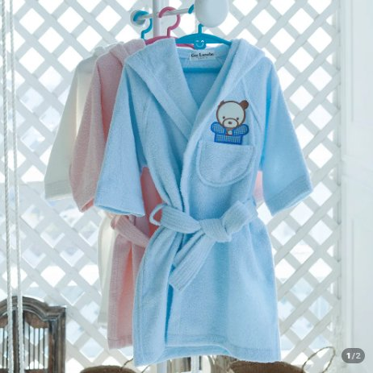
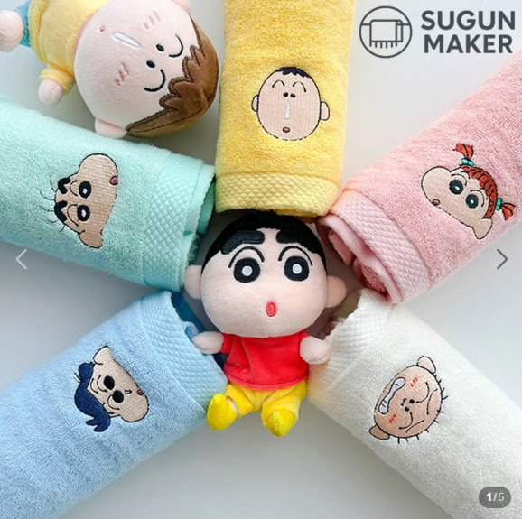

키즈 & 베이비 추천
실사용 솔직 리뷰
(주)수건메이커 큐레이션 칼럼
어린이집·유치원 키즈 선물 추천: 기라로쉬 순면 아동 후드 샤워가운 & 캐릭터 타월 솔직 가이드
핵심 3줄 요약 (아이용 타월 & 목욕가운 고르는 핵심 기준)
- 목욕 직후 체온 보호 1순위: 기라로쉬 순면 아동 후드 샤워가운은 100% 순면 테리 원단과 후드 모자 디자인으로 젖은 머리부터 몸까지 한 번에 감싸 감기를 예방합니다.
- 안전 인증(Oeko-Tex) 확인 필수: 아이 얼굴과 입에 직접 닿는 캐릭터 타월(짱구 5매 세트, 뱀부 고리수건 등)은 유해 물질 테스트를 통과한 오코텍스(Oeko-Tex) 인증 여부를 꼭 확인하세요.
- 어린이집 생일·졸업 단체 선물: 귀여운 캐릭터 자수에 아이 개별 이름 자수를 더해주면 학부모님과 아이들 모두 가장 좋아하는 답례품이 됩니다.


1. 목욕 후 도망 다니는 아이에게 딱! '기라로쉬 순면 아동 후드 샤워가운'
아이를 키워보신 부모님들이라면 목욕 직후 수건으로 물기를 닦아주기도 전에 아이가 욕실 밖으로 뛰어나가 감기에 걸릴까 봐 걱정했던 경험이 있으실 겁니다. 이럴 때 가장 실용적인 아이템이 바로 후드가 달린 순면 샤워가운입니다.
✓ 100% 순면 테리 원단: 합성 폴리에스터 가운과 달리 고급 수건 원단 그대로 제작되어 입히는 순간 물기를 빠르게 흡수합니다.
✓ 후드 모자 & 허리끈 일체형: 젖은 머리카락에서 떨어지는 물기를 막아주고 허리 벨트로 체형에 맞게 여밀 수 있어 온천, 수영장, 호캉스 물놀이에서도 필수품입니다.
✓ 사랑스러운 파스텔 컬러 & 베어 자수: 스카이블루, 핑크, 화이트 컬러와 주머니 위 곰돌이 자수로 조카 선물이나 어린이날·크리스마스 선물로 인기가 높습니다.
2. 세수하기 싫어하는 아이도 스스로 찾게 만드는 '캐릭터 자수 세면타올 5매 세트'
수건메이커 네이버 블로그에서도 많은 학부모님들의 공감을 얻었던 짱구와 친구들(짱구·흰둥이·철수·유리·훈이·맹구) 캐릭터 타월 5매 세트는 매일 아침저녁 아이들이 "오늘은 노란 짱구 수건으로 닦을래!" 하며 스스로 세수하는 습관을 길러주는 효자 아이템입니다.
| 체크 포인트 | 수건메이커 전문가의 솔직 평가 |
|---|---|
| 안전성 및 먼지 | 유럽 오코텍스(Oeko-Tex) 인증을 받은 순면/뱀부 원단으로 잔털 먼지가 적고 영유아 피부에 안전합니다. |
| 자수 퀄리티 | 나염 프린트가 아닌 촘촘한 컴퓨터 자수로 캐릭터 표정이 입체적이고 자주 세탁해도 올 풀림이 없습니다. |
| 두께 및 건조 속도 | 200g 중후한 호텔수건보다는 가볍고 부드러운 데일리 두께감이라 아이들의 작은 손으로 짜기 쉽고 건조가 매우 빠릅니다. |